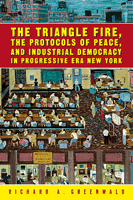

<body bgcolor="#FFFFFF" text="#000000" link="#0000FF" vlink="#CC0000" alink="#CC0000"><center><hr width="350" size="1" align="center" noshade>A history that uncovers the birth of Industrial Democracy<hr width="350" size="1" align="center" noshade><p><a href="https://cdcshoppingcart.uchicago.edu/Cart/ChicagoBook.aspx?ISBN=9781592131747&&PRESS=temple" target="_top">Buy this book!</a> | <a href="https://cdcshoppingcart.uchicago.edu/Cart/Cart.aspx?PRESS=temple" target="_top">View Cart</a> | <a href="https://cdcshoppingcart.uchicago.edu/Cart/Cart.aspx?PRESS=temple" target="_top">Check Out</a></p><p></p></center><!--none//--><h1>The Triangle Fire, the Protocols of Peace, and Industrial Democracy in Progressive Era New York</h1>
<h3>Richard A. Greenwald</h3>
<P>cloth 1-59213-174-3 $80.50, Jun 05, <FONT COLOR=#990033>Available</FONT>
<br>paper 1-59213-175-1 $32.95, Jun 05, <FONT COLOR=#990033>Available</FONT>
<br>Electronic Book 1-43990-782-X $32.95 <FONT COLOR=#990033>Available</FONT>
<BR> 344 pp
6x9
3&nbsp;halftones
</P><BLOCKQUOTE><I>"[This book] is packed with interesting historical facts, based on the author's examination of an impressive volume of primary and secondary resources."</i>
<br>&#151<b>Jonathan Cutler</b>, author of <i><a href="1614_reg.html" target="_top">Labor's Time: Shorter Hours, the UAW, and the Struggle for American Unionism</a></i><i></I></BLOCKQUOTE>
<p>America searched for an answer to "The Labor Question" during the Progressive Era in an effort to avoid the unrest and violence that flared so often in the late nineteenth and early twentieth century. In the ladies' garment industry, a unique experiment in industrial democracy brought together labor, management, and the public. As Richard Greenwald explains, it was an attempt to "square free market capitalism with ideals of democracy to provide a fair and just workplace." Led by Louis Brandeis, this group negotiated the "Protocols of Peace." But in the midst of this experiment, 146 mostly young, immigrant women died in the Triangle Factory Fire of 1911. As a result of the fire, a second, interrelated experiment, New York's Factory Investigating Commission (FIC)&#151led by Robert Wagner and Al Smith&#151created one of the largest reform successes of the period.
<p><i>The Triangle Fire, the Protocols of Peace, and Industrial Democracy in Progressive Era New York</i> uses these linked episodes to show the increasing interdependence of labor, industry, and the state. Greenwald explains how the Protocols and the FIC best illustrate the transformation of industrial democracy and the struggle for political and economic justice.
<BR>&nbsp;<h2>Excerpt</h2><P>Excerpt available at <a href="http://www.temple.edu/tempress">www.temple.edu/tempress</a></p>
<BR>&nbsp;<h2>Reviews</h2>
<p><i>"Richard Greenwald shows how in Progressive Era New York garment workers, middle-class reformers, and Tammany politicians, in coalition and conflict, created new approaches to industrial relations and reform politics that remain with us today. Even those who think they know this story will learn a great deal from this lucid, engaging account."</i>
<br>&#151<b>Joshua B. Freeman</b>, Professor of History, Queens College and the Graduate Center, City University of New York
<p><i>"By linking of the Protocols of Peace with the Triangle Shirtwaist Fire, Richard Greenwald recasts the history of industrial relations with verve and insight into gendered assumptions and class relations. With a cast of characters that includes giants of modern liberalism like Robert Wagner, Louis Brandeis, and Florence Kelley, he details how the private system of industrial adjustment intersected with a public system of labor standards to elevate middle-class expertise over worker empowerment. His is a model study of reform, labor, and the state."</i>
<br>&#151<b>Eileen Boris</b>, Hull Professor of Women's Studies, University of California, Santa Barbara
<p><i>"Greenwald offers a fresh approach to this oft-traveled terrain.... [He] meticulously details the many semantic and political shifts that characterized [the protocols]... highly recommended."</i>
<br>&#151;<b><i>WorkingUSA</i></b>
<p><i>"</i>Triangle Fire<i> is a worthwhile and useful book, especially for historical sociologists and specialists in the period. Its research puzzle is compelling, and most importantly, it is a rich and complex account of an equally rich and complex subject."</i>
<br>&#151;<b><i>Contemporary Sociology</i></b>
<p><i>"Greenwald’s study of industrial democracy is still an ambitious effort that offers new insight into industrial relations in the Progressive era and suggests the ambiguous legacy of workplace reform for both the agency of workers and the possibility for genuine industrial democracy."</i>
<br>&#151;<b><i>The American Historical Review</i></b>
<p><i>"Greenwald offers a detailed, well-researched account that eschews simple characterizations….Greenwald’s monograph makes an important contribution to the historiography of the Progressive Era….This fine case study offers thought-provoking insights into the intersection of work, class, gender, urban politics, and reform. At minimum, it should be of interest to urban, gender, business, labor and Progressive Era historians as well as to scholars of industrial relations and labor studies."
<br>&#151;<b>H-Net</b></i>
<p><i>"Greenwald offers a highly readable, albeit detailed, account of an important era in labor and industrial relations history. In it readers will notice similarities to contemporary union concerns: tensions between rank and file activism and bureaucratic structuring in both unions and industrial relations, the challenges of organizing an entire industry, the limits to state labor reform, and the fragility of political alliances…. [C]areful readers will see the relevance in high relief."</i>
<br>&#151;<b><i>Labor Studies Journal</i></b>
<p><i>"[T]his is a solid history...Greenwald concludes that this experiment in Protocolism set the parameters for the New Deal labor regime that continues to afflict us to this day." </i>
<br>&#151;<b><i>Anarcho-Syndicalist Review</i></b>
<BR>&nbsp;<h2>Contents</h2><P>
<p>Acknowledgments
<br>Introduction: Laboring Democracy
<p><b>Part I. Private Protocolism: Industrial Democracy in New York's Ladies' Garment Industry</b>
<br>1. Workers Organizing Industry: The New York City Garment Strikes of 1909 and 1910
<br>2. The Making of Industrial Democracy in the Ladies' Garment Industry: The Creation of the Protocols of Peace
<br>3. The Shifting Ground of Protocolism: Struggling for the Soul of Industrial Democracy
<p><b>Part II. Public Protocolism: The Triangle Fire and the Transformation of Industrial Democracy</b>
<br>4. "The Burning Building at 23 Washington Place": The Triangle Fire and the Transformation of Industrial Democracy
<br>5. Politics: Setting the Stage for Industrial Democracy in Progressive Era New York
<br>6. The Politics of Administrative Reform: The Factory Investigating Commission, 1911-1913
<br>7. Industrial Democracy Meets the Welfare State in Progressive Era New York
<p>Conclusion The Historical Legacy of Industrial Democracy: From Protocolism to the New Deal
<br>Notes
<br>Bibliography
<br>Index
</P><BR>&nbsp;<H2>About the Author(s)</H2>
<table><tr><td valign="top"><img src="/tempress/authors/1718_au.gif" height="90" width="75"></td><td width="100%" valign="middle"><p><b>Richard A. Greenwald</b> is Dean and Professor of History, Caspersen School of Graduate Studies and Founding Director of the Business, Society, & Culture
Program at Drew University, Madison, NJ. He is co-editor of <i>Sweatshop USA: The American Sweatshop in Historical and
Global Perspective</i> and serves on the editorial board of the journal <i>Working
USA</i>. A documentary commemorating the 100th anniversary of the Triangle Fire is projected for 2011.</P></td></tr></table>
<BR><H2>Subject Categories</H2>
<p><A HREF="/tempress/labor.html" TARGET="_top">Labor Studies and Work</a>
<BR><A HREF="/tempress/history.html" TARGET="_top">History</a>
<BR><A HREF="/tempress/sociology.html" TARGET="_top">Sociology</a>
</p>
<BR><h2 class="inpageheading">In the series</H2>
<P><I><a href="http://www.temple.edu/tempress/labor_crisis.html" onMouseOver="window.status='Click for other books in this series!'; return true;" onMouseOut="window.status=''; return true;" target="_top">Labor in Crisis</a></i>, edited by Stanley Aronowitz.
</p><p>The hope for a revived progressive movement in American politics and culture depends to a large extent on the possibility of a revived labor movement. This series will stimulate debate and discussion about the state of the American labor movement and its relation to the future of America by publishing short, provocative books that offer varying analyses and prescriptions for labor's revival as well as diverse assessments of its prospects. Books in the series will be relevant to a vision of the labor movement that presupposes movements and people who care about the chances of more equality, more democratic participation in the institutions of political and social life, and more power for those traditionally excluded from economic and political decision making.</p>
<p align="center"><a href="https://cdcshoppingcart.uchicago.edu/Cart/ChicagoBook.aspx?ISBN=9781592131747&&PRESS=temple" target="_top">Buy this book!</a> | <a href="https://cdcshoppingcart.uchicago.edu/Cart/Cart.aspx?PRESS=temple" target="_top">View Cart</a> | <a href="https://cdcshoppingcart.uchicago.edu/Cart/Cart.aspx?PRESS=temple" target="_top">Check Out</a></p><p><font face="Arial" size="1"><a href="copyright.html" onMouseOver="window.status='Web Copyright Policy';return true;" onMouseOut="window.status=''" title="Web Copyright Policy">&copy;</a> 2015 <a href="http://www.temple.edu" target="new" onMouseOver="window.status='Link to Temple University home page';return true;" onMouseOut="window.status=''" title="Link to Temple University home page">Temple University</a>. All Rights Reserved. http://www.temple.edu/tempress/titles/1718_reg.html</font></p>